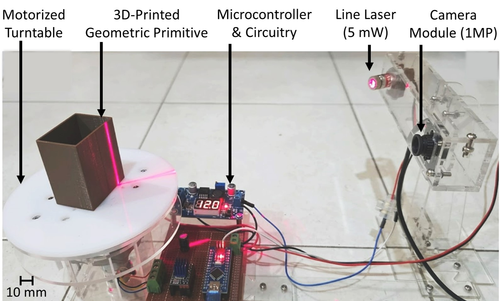
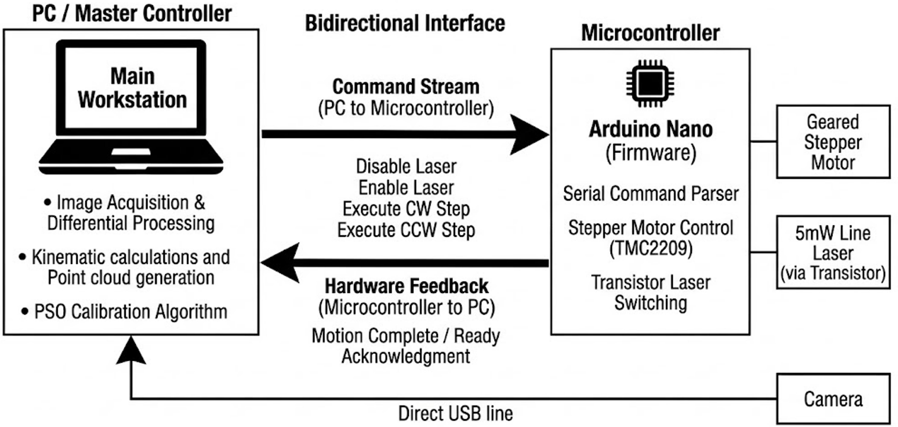
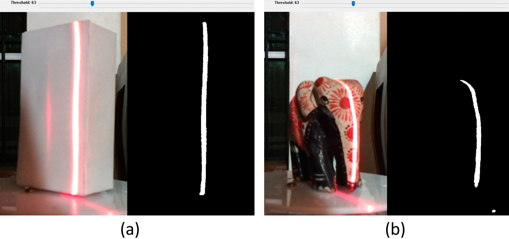
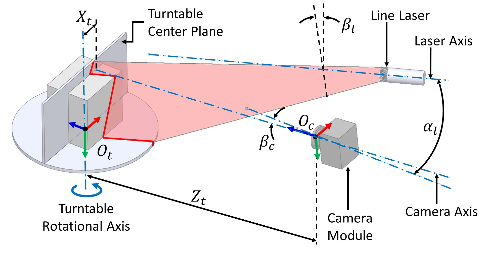
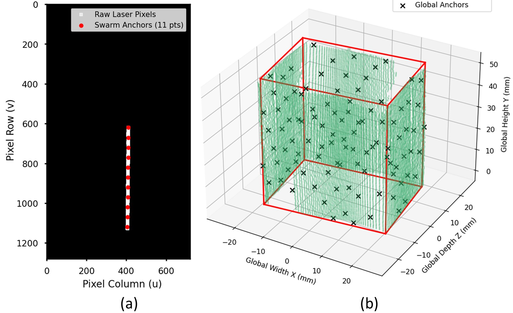
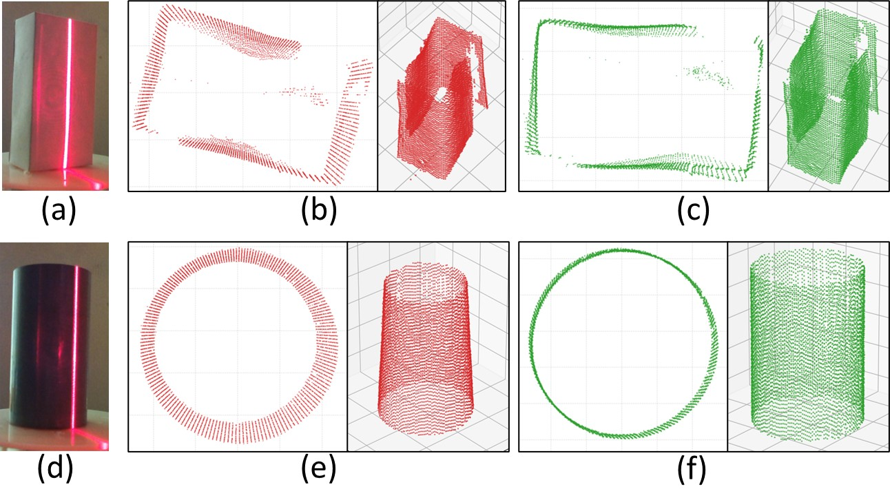
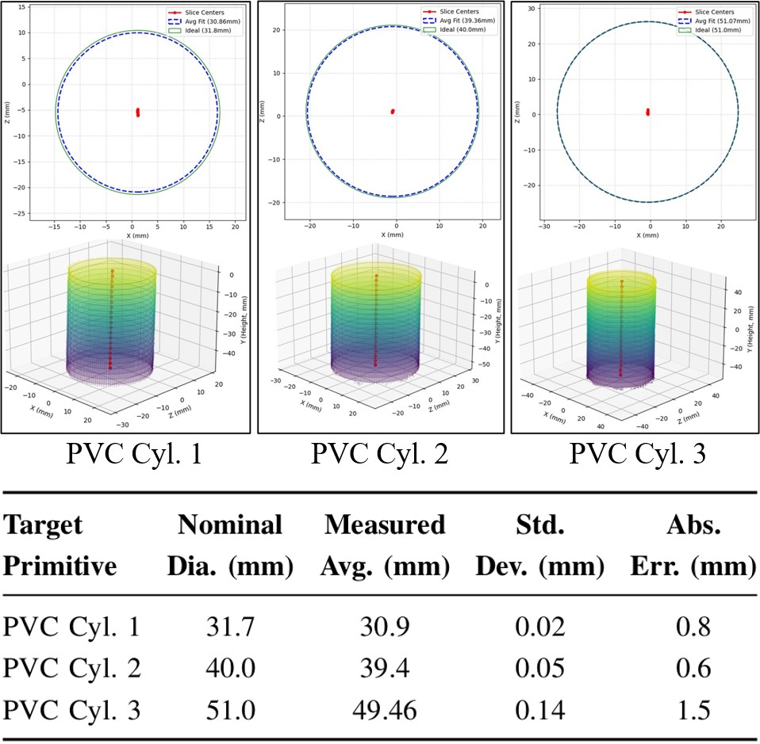
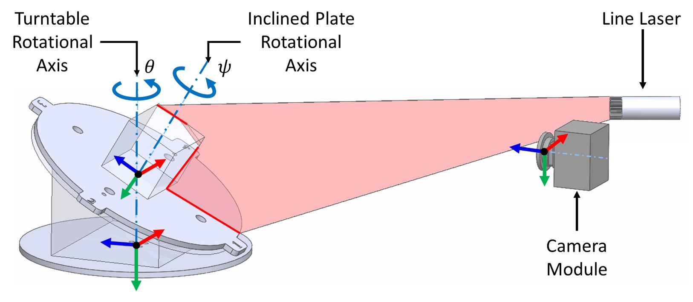
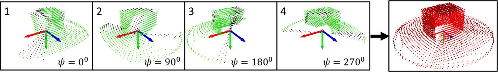

Automated Multi-Pass 3D Laser Scanning System
The integration of consumer-grade optical sensors and motorized rotational platforms has democratized 3D point cloud acquisition, making it highly accessible. However, these low-cost, custom-built systems are highly susceptible to coupled mechanical misalignments. Even slight eccentricities or tilts can propagate through rotational calculations, causing severe systematic deformations in the final 3D model, such as structural skew and volumetric "coning" effects.
To overcome these physical limitations without requiring expensive precision manufacturing, we developed a novel closed-loop, five-parameter kinematic calibration framework. This system utilizes Meta-Heuristic Optimization to estimate and correct structural assembly tolerances entirely through software.
Building upon this calibrated foundation, we introduced an inclined plate architecture to reduce the severe line-of-sight occlusions inherent to standard single-axis scanning. By systematically capturing and aligning redundant point cloud data across four distinct rotational passes, the system successfully reconstructs complex, hidden topologies. My ongoing work focuses on refining this multi-pass registration process to handle complex geometric structures.
System Architecture & Hardware Setup

The scanner's hardware architecture relies on affordable, off-the-shelf components. The optical acquisition module consists of a 1-Megapixel USB camera and a 5 mW (650 nm) continuous-wave line laser, mounted in a portrait orientation to maximize the vertical scanning volume.
The rotational platform is driven by a geared stepper motor coupled with a TMC2209 driver to ensure vibration-free angular steps. A 3D-printed geometric primitive (a small cuboid) is temporarily placed on the turntable to act as a target for the self-calibration phase.
A dual-controller setup manages the workflow. A main workstation (PC) handles the heavy spatial processing, kinematic calculations, and optimization algorithms.
Simultaneously, an Arduino Nano microcontroller acts as the low-level firmware. It parses serial commands from the PC to execute precise stepper motor rotations and synchronize the high-speed transistor switching of the line laser.

Differential Optical Capture & Thresholding

Consumer-grade lasers and cameras are highly susceptible to ambient light noise. To extract a clean laser profile, the system executes a differential optical capture. At every rotational step, the microcontroller captures an ambient frame (laser off) and an active frame (laser on). By performing pixel-wise image subtraction and applying a binary intensity threshold, the ambient background is completely neutralized, isolating a distinct 2D pixel profile of the laser line regardless of the object's surface texture.
Five-Parameter Kinematic Error Modeling
To map the 2D laser pixels into a 3D coordinate space, a mathematical framework is required to transform points from the Camera Coordinate Frame to the Turntable Frame.
To account for the inevitable mechanical assembly tolerances, we derived a comprehensive kinematic model containing five extrinsic parameters: Lateral Eccentricity (Xt), Orthogonal Depth Offset (Zt), Laser Triangulation Yaw (αl), Camera Pitch (βc), and Laser Plumb Tilt (βl). Through trigonometric transformations, this model corrects coupled angular tilts and translational eccentricities dynamically during rotation.

Calibration via Particle Swarm Optimization (PSO)

Gradient-descent algorithms often fail and stagnate in local minima when dealing with highly coupled rotational parameters. Therefore, we utilized Particle Swarm Optimization (PSO) to ensure robust global convergence.
However, evaluating dense point clouds is computationally expensive. To solve this, the system first applies Statistical Outlier Removal (SOR) to filter noise, and then deterministically downsamples the 3D data into a sparse set of approximately 200 "Kinematic Anchors". The PSO algorithm rapidly iterates over these anchors, seeking the optimal 5-parameter vector that minimizes the mean squared error (MSE) against the known ideal dimensions of the 3D-printed calibration cuboid.
Geometric Validation & Final Results
The calibrated framework successfully neutralized the complex mechanical tolerances of the DIY scanner setup. Qualitative evaluations confirmed the systematic elimination of structural skew and coning deformations, successfully recovering the orthogonal planar faces and parallel geometries of the targets.


To quantitatively validate the system's precision, a multi-layer sliced geometric evaluation was performed on three standard PVC cylinders of known diameters. The results demonstrated that the software-driven calibration framework achieves industrial-grade, sub-millimeter volumetric accuracy, validating it as a highly accessible pathway for robust 3D digitization.
Multi-Pass Scanning via Inclined Plate Architecture
Building upon the foundational kinematic framework, subsequent development focused on resolving geometric occlusions inherent to single-axis rotational scanners. Complex object topologies frequently suffer from line-of-sight shadowing during a standard 360-degree sweep, resulting in incomplete point cloud generation and missing structural data.
To address this limitation, an automated multi-pass scanning strategy was implemented utilizing a custom inclined plate rotational mechanism. This configuration introduces a secondary rotational axis (ψ), enabling the extraction of structural data from diverse vantage points. By systematically altering the object's orientation on the turntable, the system successfully bypasses optical occlusions to capture hidden geometries.

The multi-pass data acquisition process executes sequential scans at 90-degree increments (ψ = 0°, 90°, 180°, 270°). An angle-aware point cloud registration algorithm precisely aligns these redundant datasets, effectively reconstructing complex, occluded topologies that would otherwise be lost to sensor shadowing.
